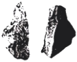
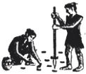
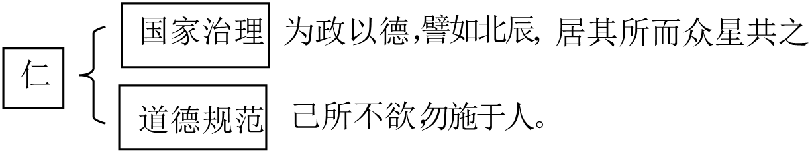
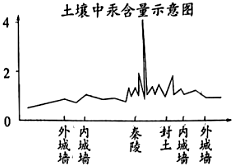
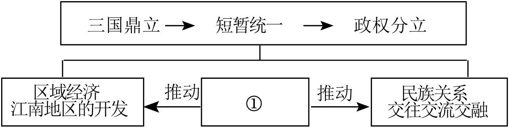

2023年北京市中考历史试卷 · 选择题 第1、2、3、4、5题
1．（1.5分）考古发现是了解史前社会历史的重要依据。以下材料可作为我国原始农业发展证据的是（ ）
A．

北京人制作的石器B．河姆渡遗址出土的稻谷C．

农耕生活想象图D．曲辕犁模型2．（1.5分）如图示意图表现的是中国古代某一思想家的主张，这位思想家是（ ）

A．老子B．孔子C．墨子D．韩非
3．（1.5分）战国时期，铁制工具的使用进一步推广，使大量荒地得到开垦。开垦者缴纳赋税，新兴地主阶级逐渐壮大。同时，铁制工具在开挖河渠中的使用成就了大型水利工程。以上材料说明（ ）
A．生产工具的进步推动社会发展
B．铁制工具完全取代了木石工具
C．各国变法带来生产工具的改进
D．水利工程为国家统一创造条件
4．（1.5分）《史记》记载：秦始皇陵地宫中“以水银（汞）为百川江河大海”。考古工作者对皇陵遗址及周边进行汞含量测定，其结果（见图）（ ）
①秦始皇北击匈奴有了考古证据
②秦始皇陵地宫位于外城墙之下
③该成果得益于考古学与化学的结合
④考古发现与文献记载可以相互印证

A．①②B．②③C．③④D．①④
5．（1.5分）如图是一位同学绘制的某单元的知识结构示意图，其中①处应为（ ）

A．人口迁徙B．孝文帝改革
C．大运河的开通D．经济重心的南移